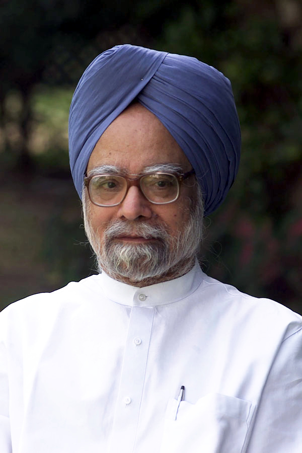

Learn title ↔ author ↔ why-in-news. BPSC picks the political memoir and the award-winner first.
| Book | Author | Why in news | Date |
|---|---|---|---|
| The Emergency Diaries — Years That Forged a Leader | BlueKraft Digital Foundation (compiler); foreword by ex-PM H.D. Deve Gowda | On PM Modi's role as a young RSS pracharak in the anti-Emergency movement; released by Home Minister Amit Shah on "Samvidhan Hatya Diwas" (50 years of the Emergency) | 25 Jun 2025 |
| Hope: The Autobiography | Pope Francis (with Carlo Musso) | First autobiography ever published by a reigning Pope; released in ~80 countries for the 2025 Jubilee Year of Hope, three months before his death | 14 Jan 2025 |
| Mother Mary Comes to Me | Arundhati Roy | First memoir by the 1997 Booker winner; on her mother Mary Roy (educator; 1986 Mary Roy v. State of Kerala case); launched at Kochi | Sep 2025 |
| 107 Days | Kamala Harris | Memoir of her 107-day 2024 US presidential campaign (Biden's withdrawal → loss to Trump); Simon & Schuster | 23 Sep 2025 |
| The Loneliness of Sonia and Sunny | Kiran Desai | Booker Prize 2025 shortlist (shortlist announced 23 Sep 2025) — her first novel in 19 years since the Booker-winning The Inheritance of Loss (2006) | 2025 |
| Flesh | David Szalay | Booker Prize 2025 WINNER — first Hungarian-origin winner; £50,000; judges chaired by Roddy Doyle | 10 Nov 2025 |
| Heart Lamp (tr. from Kannada) | Banu Mushtaq; tr. Deepa Bhasthi | International Booker Prize 2025 WINNER — first Kannada work and first short-story collection to win; Mushtaq = 2nd Indian winner; Bhasthi = 1st Indian translator to win | 20 May 2025 |
| Taiwan Travelogue (tr. from Mandarin) | Yáng Shuāng-zǐ; tr. Lin King | International Booker Prize 2026 WINNER — first Mandarin-language winner; £50,000 split author/translator | 19 May 2026 |
| India: 5000 Years of History on the Subcontinent | Audrey Truschke | Big narrative history of the subcontinent | 2025 |
| Indira Gandhi and the Years That Transformed India | TCA Srinivasa Raghavan | Indira tenure & 1975–77 Emergency analysis; timed to Emergency@50 | Jun 2025 |
| The New World: 21st Century Global Order and India | Ram Madhav | Geopolitics and India's role (trap: NOT Shashi Tharoor) | 2025 |
| The One: Cricket, My Life and More | Shikhar Dhawan | Cricketer's autobiography — pairs with Ashwin's I Have the Streets (70th BPSC PYQ) | 2025 |
| Award | Winner | Key fact | Announced |
|---|---|---|---|
| 59th Jnanpith (for 2024) | Vinod Kumar Shukla (Hindi; Rajnandgaon, Chhattisgarh) | 1st winner from Chhattisgarh; 12th Hindi winner; works: Naukar Ki Kameez, Deewar Mein Ek Khidki Rehti Thi; he died 23 Dec 2025 (88) — months after the honour | Mar 2025 |
| 60th Jnanpith (for 2025) | R. Vairamuthu (Tamil lyricist-author) | 3rd Tamil winner after Akilan (1975) and Jayakanthan (2002); 1st for Tamil poetry; his novel Kallikkaattu Ithihasam won the Sahitya Akademi in 2003 | Mar 2026 |
| Sahitya Akademi Awards 2024 | 23 recipients; English: Easterine Kire — Spirit Nights; Hindi: Gagan Gill — Main Jab Tak Aai Bahar | Announced Dec 2024; ceremony 8 Mar 2025, Sahityotsav, New Delhi | Dec 2024 |
| Sahitya Akademi Awards 2025 | 24 books; English: Navtej Sarna — Crimson Spring (novel); Hindi: Mamta Kalia — Jeete Jee Allahabad (memoir); Urdu: Pritpal Singh Betab — Safar Jaari Hai | Announced 16 Mar 2026 after a temporary halt per Culture Ministry directives; ceremony 31 Mar 2026; ₹1 lakh + copper plaque + shawl | 16 Mar 2026 |
| Nobel Prize in Literature 2025 | László Krasznahorkai (Hungary) | "Compelling and visionary oeuvre that, in the midst of apocalyptic terror, reaffirms the power of art" | 9 Oct 2025 |
| Pulitzer Fiction 2025 / 2026 | James — Percival Everett / Angel Down — Daniel Kraus | Everett retold Huckleberry Finn from Jim's POV (also won National Book Award 2024); Kraus wrote a WWI novel in a single sentence | 5 May 2025 / 4 May 2026 |
BPSC's obituary question is usually a one-liner on who died / when / age / claim to fame, or a statement question (the 69th did this for Queen Elizabeth II). Rows marked ⚠️ are single-source compiled-list entries — prioritise the bolded, multi-verified rows.

| Name | Field | Died | Age |
|---|---|---|---|
| Dr. Manmohan Singh | Former PM (2004–14); economist; ex-RBI Governor & 1991-reforms FM — EDGE CASE, just before window | 26 Dec 2024 | 92 |
| Ajit Pawar | Maharashtra Dy CM & NCP chief (longest-serving DyCM, 6 terms) — Learjet 45 crash at Baramati airport; 5 dead; 3-day state mourning; Sunetra Pawar later became DyCM (Baramati bypoll, Apr 2026) | 28 Jan 2026 | 66 |
| Vijay Rupani | Former Gujarat CM — died in the Air India AI171 Ahmedabad crash ⚠️ | 12 Jun 2025 | 68 |
| Shibu Soren | JMM founder, former Jharkhand CM ("Dishom Guru") ⚠️ | 4 Aug 2025 | 81 |
| Satya Pal Malik | Former Governor (J&K, Goa, Bihar, Meghalaya) ⚠️ | 1 Aug 2025 | 79 |
| V.S. Achuthanandan | Former Kerala CM (CPI(M) veteran) ⚠️ | 21 Jul 2025 | 101 |
| Shivraj Patil | Former Union Home Minister, Lok Sabha Speaker ⚠️ | 12 Dec 2025 | 90 |
| Suresh Kalmadi | Former Union Minister, ex-IOA president ⚠️ | 17 Jan 2026 | 81 |
| Navin Chawla | Former Chief Election Commissioner ⚠️ | 1 Feb 2025 | 79 |
| Girija Vyas | Former Union Minister (Congress) ⚠️ | 8 May 2025 | 79 |
| Sukhdev Singh Dhindsa | Veteran Akali leader ⚠️ | 28 May 2025 | 89 |
| D.D. Lapang | Former Meghalaya CM ⚠️ | 15 Sep 2025 | 91 |
| Ravi Naik | Former Goa CM ⚠️ | 15 Oct 2025 | 79 |
| Mukul Roy | Bengal politician (ex-TMC/BJP) ⚠️ | 17 Feb 2026 | 71 |
| R. Nallakannu | CPI veteran, freedom fighter ⚠️ | 5 Feb 2026 | 101 |
| B.C. Khanduri | Former Uttarakhand CM (Maj. Gen. retd.) ⚠️ | 17 May 2026 | 91 |
| Name | Field | Died | Age |
|---|---|---|---|
| Dr. Jayant V. Narlikar | Astrophysicist (Hoyle–Narlikar theory; IUCAA founder; Padma Vibhushan 2004); posthumous Vigyan Ratna — Rashtriya Vigyan Puraskar 2025 (announced 26 Oct 2025) | 20 May 2025 | 86 |
| Asha Bhosle | Legendary playback singer (~12,000 songs in 20+ languages; Dadasaheb Phalke Award 2000; Padma Vibhushan 2008; sister of Lata Mangeshkar); state honours | 12 Apr 2026 | 92 |
| Dharmendra | Bollywood legend ("He-Man"; Padma Bhushan 2012) ⚠️ (date widely reported) | 24 Nov 2025 | 89 |
| Manoj Kumar | Actor ("Bharat Kumar" patriotic films; Dadasaheb Phalke 2015) ⚠️ | 4 Apr 2025 | 87 |
| Dr. K. Kasturirangan | Former ISRO chairman (Chandrayaan-1 era) ⚠️ | 25 Apr 2025 | 84 |
| Dr. Rajagopala Chidambaram | Nuclear scientist (former PSA & AEC chairman; Pokhran tests) ⚠️ | 4 Jan 2025 | 88 |
| Dr. Madhav Gadgil | Ecologist (WGEEP / "Gadgil report" on Western Ghats) ⚠️ | 7 Jan 2026 | 83 |
| Prof. V. Rajaraman | "Father of computer science education in India" ⚠️ | 8 Nov 2025 | 92 |
| Vinod Kumar Shukla | Hindi writer; 59th Jnanpith (Mar 2025) — won the award, then died the same year (Jnanpith is never posthumous) | 23 Dec 2025 | 88 |
| S.L. Bhyrappa | Kannada novelist (Parva, Aavarana) ⚠️ | 24 Sep 2025 | 94 |
| Zubeen Garg | Assamese singer ("Voice of Assam"; Ya Ali); died in Singapore ⚠️ | 19 Sep 2025 | 52 |
| Piyush Pandey | Legendary adman (Ogilvy; Padma Shri) ⚠️ | 24 Oct 2025 | 70 |
| Sreenivasan | Malayalam actor-writer-filmmaker ⚠️ | 20 Dec 2025 | 69 |
| Govardhan Asrani | Actor (comedy veteran) ⚠️ | 20 Oct 2025 | 84 |
| Pankaj Dheer | Actor (Karna in BR Chopra's Mahabharat) ⚠️ | 15 Oct 2025 | 68 |
| Kamini Kaushal | Actress ⚠️ | 14 Nov 2025 | 98 |
| Kumudini Lakhia | Kathak legend (Kadamb) ⚠️ | 11 Apr 2025 | 94 |
| Pandit Chhannulal Mishra | Hindustani classical vocalist (Padma Vibhushan) ⚠️ | 2 Oct 2025 | 89 |
| Ramakanta Rath | Odia poet (Sahitya Akademi winner) ⚠️ | 22 Mar 2025 | 90 |
| Pritish Nandy | Poet, journalist, former RS MP ⚠️ | 8 Jan 2025 | 73 |
| Ram Vanji Sutar | Sculptor — Statue of Unity creator (Padma Bhushan) ⚠️ | 17 Dec 2025 | 100 |
| Ratan Thiyam | Theatre doyen (Theatre of Roots; Chorus Repertory) ⚠️ | 23 Jul 2025 | 77 |
| Saalumarada Thimmakka | Environmentalist ("tree mother", Padma Shri) ⚠️ | 14 Nov 2025 | 114 |
| Gopichand Hinduja | Industrialist — Hinduja Group chairman ⚠️ | 4 Nov 2025 | 85 |
| Sir Mark Tully | Veteran journalist (ex-BBC India chief) ⚠️ | 25 Jan 2026 | 90 |
| Sankarshan Thakur | Senior journalist (Editor, The Telegraph) ⚠️ | 8 Sep 2025 | 63 |
| H.K. Dua | Veteran journalist, diplomat, former RS MP ⚠️ | 4 Mar 2026 | 88 |
| Fauja Singh | Centenarian marathon runner (hit-and-run, Punjab) ⚠️ | 14 Jul 2025 | 114 |
| Dr. Vece Paes | Hockey — 1972 Munich Olympic bronze; father of Leander Paes ⚠️ | 14 Aug 2025 | 80 |
| Inderjit Singh Bindra | Former BCCI president, cricket administrator ⚠️ | 25 Jan 2026 | 84 |
| Dilip Doshi | Cricketer (left-arm spinner) ⚠️ | 23 Jun 2025 | 77 |
| Syed Abid Ali | Former India cricketer ⚠️ | 12 Mar 2025 | 83 |
| Name | Field | Died | Age |
|---|---|---|---|
| Pope Francis | 266th Pope (first Latin American & first Jesuit pope); died Casa Santa Marta, Easter Monday; succeeded by Pope Leo XIV (Robert Prevost, first American pope — conclave May 2025) | 21 Apr 2025 | 88 |
| Ayatollah Ali Khamenei | Iran's Supreme Leader (1989–2026) — killed in US–Israeli strike amid Middle East war; succeeded by son Mojtaba Khamenei (~8 Mar 2026); 7-day national mourning | 28 Feb 2026 | 86 |
| Muhammadu Buhari | Former Nigeria President (2015–23) ⚠️ | 13 Jul 2025 | 82 |
| Raila Odinga | Former Kenya PM; ODM leader ⚠️ | 15 Oct 2025 | 80 |
| Tomiichi Murayama | Former Japan PM (1994–96; Murayama Statement) ⚠️ | 17 Oct 2025 | 101 |
| José Mujica | Former Uruguay President ("world's humblest president") ⚠️ | 13 May 2025 | 89 |
| Sam Nujoma | Namibia's founding President ⚠️ | 8 Feb 2025 | 95 |
| Horst Köhler | Former German President ⚠️ | 1 Feb 2025 | 81 |
| Edgar Lungu | Former Zambia President ⚠️ | 5 Jun 2025 | 68 |
| Abdullah Ahmad Badawi | Former Malaysia PM ⚠️ | 14 Apr 2025 | 85 |
| Dick Cheney | Former US Vice-President ⚠️ | 3 Nov 2025 | 84 |
| Jesse Jackson | US civil rights leader ⚠️ | 17 Feb 2026 | 84 |
| Queen Sirikit | Thailand's Queen Mother ⚠️ | 24 Oct 2025 | 93 |
| Mario Vargas Llosa | Nobel laureate (Literature 2010), Peru ⚠️ | 13 Apr 2025 | 89 |
| James D. Watson | Nobel laureate — DNA double-helix co-discoverer ⚠️ | 6 Nov 2025 | 97 |
| David Baltimore | Nobel laureate (Medicine 1975) ⚠️ | 6 Sep 2025 | 87 |
| Tom Stoppard | Playwright (Oscar, Shakespeare in Love) ⚠️ | 29 Nov 2025 | 88 |
| Sophie Kinsella | Author (Shopaholic series) ⚠️ | 10 Dec 2025 | 55 |
| Robert Redford | Actor-director (Sundance founder) ⚠️ | 16 Sep 2025 | 89 |
| Diane Keaton | Actor (Oscar, Annie Hall) ⚠️ | 11 Oct 2025 | 79 |
| Gene Hackman | Actor (2× Oscar) ⚠️ | ~26 Feb 2025 | 95 |
| David Lynch | Filmmaker (Mulholland Drive) ⚠️ | 15 Jan 2025 | 78 |
| Val Kilmer | Actor ⚠️ | 1 Apr 2025 | 65 |
| Giorgio Armani | Fashion designer ⚠️ | 4 Sep 2025 | 91 |
| Valentino Garavani | Fashion designer ⚠️ | 19 Jan 2026 | 93 |
| Frank Gehry | Architect (Pritzker; Guggenheim Bilbao) ⚠️ | 5 Dec 2025 | 96 |
| Boris Spassky | Chess world champion (1972 "Match of the Century" vs Fischer) ⚠️ | 27 Feb 2025 | 88 |
| Ágnes Keleti | Oldest Olympic champion (10 medals), Holocaust survivor ⚠️ | 2 Jan 2025 | 103 |
| Dickie Bird | Legendary cricket umpire ⚠️ | 22 Sep 2025 | 92 |
| Hulk Hogan | WWE wrestling legend ⚠️ | 24 Jul 2025 | 71 |
| Item | Value | As-Of Date |
|---|---|---|
| Booker Prize 2025 | Flesh — David Szalay (first Hungarian-origin winner; chair Roddy Doyle; £50,000) | 10 Nov 2025, London |
| International Booker 2025 | Heart Lamp — Banu Mushtaq, tr. Deepa Bhasthi (1st Kannada + 1st short-story win) | 20 May 2025, Tate Modern |
| International Booker 2026 | Taiwan Travelogue — Yáng Shuāng-zǐ, tr. Lin King (1st Mandarin-language win) | 19 May 2026, Tate Modern |
| 59th Jnanpith (2024) | Vinod Kumar Shukla — Hindi; 1st from Chhattisgarh; 12th Hindi winner | Announced Mar 2025 |
| 60th Jnanpith (2025) | Vairamuthu — Tamil; 3rd Tamil winner (Akilan 1975, Jayakanthan 2002) | Announced Mar 2026 |
| Sahitya Akademi Awards 2025 | 24 languages; English: Navtej Sarna — Crimson Spring; Hindi: Mamta Kalia — Jeete Jee Allahabad | Announced 16 Mar 2026; ceremony 31 Mar 2026 |
| Nobel Literature 2025 | László Krasznahorkai (Hungary) | 9 Oct 2025 |
| The Emergency Diaries | BlueKraft Digital Foundation; foreword Deve Gowda; released by Amit Shah | 25 Jun 2025 (Samvidhan Hatya Diwas) |
| Hope: The Autobiography | Pope Francis — first autobiography by a reigning pope | 14 Jan 2025 |
| Mother Mary Comes to Me | Arundhati Roy — her first memoir (on mother Mary Roy) | Sep 2025 |
| 107 Days | Kamala Harris — 2024 campaign memoir (Simon & Schuster) | 23 Sep 2025 |
| Dr. Manmohan Singh (92) | Former PM (2004–14) — edge case just outside window | d. 26 Dec 2024 |
| Pope Francis (88) | 266th pope; succeeded by Leo XIV (first American pope) | d. 21 Apr 2025 |
| Ajit Pawar (66) | Maharashtra DyCM; Learjet 45 crash, Baramati airport | d. 28 Jan 2026 |
| Ali Khamenei (86) | Iran's Supreme Leader; killed in US–Israeli strike; → son Mojtaba | d. 28 Feb 2026 |
| Asha Bhosle (92) | Playback legend; Dadasaheb Phalke 2000; Padma Vibhushan 2008 | d. 12 Apr 2026 |
| Dharmendra (89) | Bollywood "He-Man"; Padma Bhushan 2012 | d. 24 Nov 2025 |
| Dr. Jayant V. Narlikar (86) | Astrophysicist; posthumous Vigyan Ratna (Rashtriya Vigyan Puraskar 2025) | d. 20 May 2025 |
| Vinod Kumar Shukla (88) | Hindi writer; won 59th Jnanpith in Mar 2025, died the same year (award is never posthumous) | d. 23 Dec 2025 |
| Ram Vanji Sutar (100) | Sculptor of the Statue of Unity | d. 17 Dec 2025 |